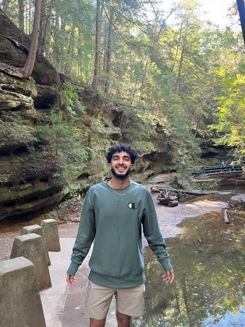

My Story

My background has shaped the way I look at school, work, and life. It has taught me to stay grounded, appreciate every opportunity, and keep working even when things are not easy. I try to carry myself with honesty, respect, patience, and effort in everything I do. I believe growth comes from staying humble, learning from mistakes, and pushing myself to become better step by step. These values motivate me to take my education seriously, build my skills, and work toward a future I can be proud of.
I am someone who is still learning and figuring things out, but I care about improving. I do not want to just go through school without a purpose. I want to grow into someone who can be proud of the work I do and the way I carry myself.
This page is about the personal side of my portfolio. It explains where my motivation comes from and why I care about education, leadership, service, and growth.
Education
I study Computer Science at the University of Cincinnati in the College of Engineering and Applied Science.
My expected graduation date is May 2027. My coursework has helped me practice logical thinking, programming, web design, analysis, and problem solving.
Work And Leadership
Through my Software & Systems Co-op at MAK Engineering Services, I have worked with performance data, Python, Excel, quality assurance support, CAD-related collaboration, and research connected to EV and IoT energy solutions.
I have also worked as a Student Ambassador with EM Marketing, where I communicate with prospective students, help answer questions, and assist with student engagement events.
Activities and Community
Outside of classes, I have been involved in leadership and service through programs such as Bearcat Buddies, IEEE, Student Government, CEAS Tribunal, and the Marian Spencer Scholarship community.
These experiences matter to me because they help me grow as a communicator, leader, and member of the UC community.